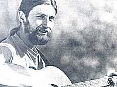

musical festivals... and more!
Even homesteaders need to relax and enjoy themselves from time to time, right? And almost everybody these days wants to cut his or her cost of living. So how about a little do-it-yourself entertainment?
And that's what this column is all about. Down-home music that you can make ... and the instruments (which, in some cases, you can also make!) to play that music on.
The important thing is that this is your column. If you like it, write to me and let me know. If you have some ideas for this feature, let me know that. I'm open to any suggestions or information you care to contribute. I'll even try to answer your questions about down-home music ... but-both for the benefit of all MOTHER's readers and to ease my correspondence load-I'll deal with those questions, whenever possible, here in this column ... rather than in personal letters.
Address your correspondence-for this column and this column only-to Marc Bristol, 18520 312th Ave. N.E., Duvall, Wash. 98019.
Here's good news for all you fans of folk music gatherings: The festival season is about to get underway again! Starting to the spring and extending through the early fall months, such celebrations provide super opportunities for musicians to get together ... and-as you probably know if you've ever attended one of these "shindigs"-the action on stage isn't necessarily what makes a festival great. The spontaneous jam sessions that spring up in parking lots and picnic areas (where you can get a chance to try out a few licks) often turn out to be the most enjoyable features of the events.
One of the best places to find out when the various music festivals are scheduled to be held is the Calendar of Events produced by the National Council for the Traditional Arts. If you were reading this column a couple of years back, you may remember my report (in MOTHER NO. 57) that the Council had decided to discontinue their annual listing because of the time and money required to put out the calendar. At that time, I encouraged everyone to write and ask the group to resume publication of the valuable schedule, and-thanks to your effort-sit's now being offered once again!
The new NCTA calendar is the largest and most complete catalog of Its type ... and the 1981 edition will contain listings of over 1,500 traditional events-such as ethnic festivals, craft fairs, bluegrass "hootenannies", fiddlers' conventions, and folklife festivals-in the U.S. and Canada. You might expect the large book to cost somewhere in the $15-$20 range, but it sells for-surprise!-only $4.00 postpaid. The new calendar should be available soon after this issue of MOTHER hits the stands ... and you can order a copy from the National Council for the Traditional Arts, Dept. TMEN, 1346 Connecticut Avenue N.W., No. 1118, Washington, D.C. 20036.
Another publication that will be of interest to folk music enthusiasts and festival-goere is Come For To Sing. (Subscriptions cost $6.00 a year, for four issues. Write to Come For To Sing, Dept. TMEN, 917 West Wolfram, Chicago, Illinois 60657.) Although the magazine is subtitled "Folk Music in Chicago and the Midwest", it contains information for homegrown pickers everywhere. The upcoming events column does report only on happenings in the Chicago area ... but the magazine also contains reports on major folk festivals around the country, book and record reviews, and articles about performers. In addition, the annual winter edition of Come For To Sing features a supplement on folk music resources that covers folk, blues, and ethnic clubs around Chicago ... Midwest record stores and mail order firms which handle traditional music ... and news of folk music schools, etc.
Speaking of Chicago, I'd like to share several discoveries I made while visiting the "windy city" last summer. First of all, I had the pleasure of meeting Bill Landow, a founder of the Chicago Area Bluegrass Music and Pickin' Society. The group meets regularly (usually at a local festival, in season) and also puts out a monthly newsletter, called 'Grass Clippings, which lists musical events in that area. If you're interested in the Chicago bluegrass scene, you can join the Society ( and subscribe to their newsletter) for $6.00 a year. Write to Claudia Yarbrough, Editor, Chicago Area Bluegrass Music and Pickin' Society, Dept. TMEN, 1437 West Howard Street, Chicago, Illinois 60626.
Taking a short hop across town from the bluegrass group's headquarters. I visited the office of Flying Fish Records ... which-in contrast to those sterile "plastic" establishments maintained by most large record companies-is colorfully decorated in "1960's" style. The "Fish" folks offer a catalog of over 150 albums, with emphasis on the work of nationally touring folk music artists ... plus a few rhythm-and-blues and jazz disks. The Flying Fish label features such artists as John Hartford, Vassar Clements, Joel Mabus, David Amram, Hot Rize, Amos Garret, Cache Valley
Drifters, Tracy Nelson, Peter Rowan, Bryan Bowers, Newgrass Revival, Boys of the Lough, and Shel Silverstein. FF also distributes the Nessa and Kaleidoscope labels ... the latter of which handles such familiar names as Kate Wolf, David Grisman, Tony Rice, and Jethro Burns.
I picked up quite a few good albums on my visit to Flying Fish, too! Jim Post's Magic in Concert is an appropriately titled disk by a fun-loving singer, songwriter, and antinuclear activist. Paula Lockheart-a "new voice" with good feeling and control-presents an appealing collection of gutsy blues and jazz on It Ain't the End of the World. Ms. Lockheart is one of the strongest vocalists I've heard in along time ... and I'm looking forward to hearing her other Flying Fish album! River of Swing by Dakota Dave Hull and Sean Blackburn spotlights old-time Western swing, with an emphasis on the wide range of influences that contribute to this musical form.
I imagine that if you attend any of the major folk festivals this season, you'll hear an act or two with records out on the Flying Fish label. There'll probably also be a booth selling FF records at the gathering, but- if not-you can always order the outfit's free catalog from Flying Fish Records, Dept. TMEN, 1304 West Schubert, Chicago, Illinois 60614.
I've also recently come across a couple of new publications that I think no homegrown musician should be without. The first one, Oak Report, is an exciting new quarterly magazine. The journal covers all aspects of music, from history and theory to playing and listening. Here are a few sample article titles: "Stephane Grappelli and Yehudi Menuhin on Reading and Improvising" ... "Fantasy and Reality in the World of Blues: What Becomes a Legend Most?"... "Big Band Swing and String Band Swing: Small is Beautiful" ... "Duels and Duets: The Tenor Saxophone Legacy of Lester Young and Herschel Evans" ... and "Discovering Salsa".
At the time I'm writing this column (December 1980), Oak Report is offering a charter subscription for $7.00 a year (four issues), which includes a copy of The Folk Music Sourcebook by Larry Sandburg and Dick Weissman (a $7.95 value by itself). The address is Oak Report, Dept. TMEN, P.O. Box 572, Bellvale Road, Chester, New York 10918.
You know, I get a lot of letters from readers who think that I'm a music publisher myself ... or that-at least-I have the "inside scoop" on where to get original songs published. Well, the truth is that I'm really in the same boat as is any musician, and I'm constantly wondering where to send my tunes so that they'll have a wider audience! However, I recently came across a new publication that may help us all out.
Tunesmith is aimed at the aspiring songwriter, and most of the small newsletter is devoted to listings of music publishers, descriptions of the type of material each one is looking for, and information on the kinds of submissions each prefers (reel to reel, cassette, lead sheet, etc.). The single issue that I saw (June 1980) mentions that Tunesmith is compiling a list of radio stations that are willing to play the music of unknown artists. Such broadcasters usually air a one-hour weekly program of tapes or records received directly from the songwriters. If you know of any stations that do so-or would like to see the list when it's completed-write to Tunesmith, Dept. TMEN, P.O. Box 3839, Hollywood, California 90028. Subscriptions to the monthly newsletter are $15 for 6 months, $25 for a year, or $40 for two years.
Most banjo pickers are, at one time or another, asked why there isn't a sound hole in the head of a banjo as there is on the sounding board of a guitar. Reader Mark Cox got that query from his daughter ... and he didn't know the answer either. So Mark asked around, and eventually found out that banjo heads have no openings because the tremendous stress-up to 20,000 pounds per square inch-that's put on the material would cause it to tear around a hole.
Well, that would have satisfied most of us ... but not Mark! He started tinkering around, and finally developed a method of controlling that tension by fusing an O-ring into the skin of his banjo's head, after he'd cut a hole in the stretched material. He then showed the innovation to his friend Don Reno, who suggested that Mark move the hole from the center toward the edge of the instrument. Once that was done, the change in the banjo's tonal quality amazed both of them. The hole lets the tones-particularly the high notes-resonate and project ... and gives the banjo that hard, driving sound so many pickers try to achieve.
According to an article in Banjo Newsletter, the "hole in the head" idea can cause a noticeable improvement in the sound of a banjo, particularly if it's one of the less expensive models without a resonator on the back. Mark is now offering his specially designed heads by mail ... and he has both the 11-inch models (in low, medium, and high crown), and the 11-1/8-inch heads (in low crown only) for less costly Japanese-made banjos. You can order one-for $25 postpaid-from Mark Cox, Dept. TMEN, Route 1. Box 61A, Hiwassee, Virginia 24347.
More good news: The National Audubon Society has released an album of ecology-related songs as a fund-raising project for the Expedition Institute ... a program in which scholarship students spend a full school year on an Audubon-sponsored camping trip, learning back woods skills and getting in tune with the balance of nature. A pair of songsmiths named David Laing and Tom Wisner-whose talents are dedicated to a new consciousness of the environment-emerge as stars on this album. Also included in the collection are tunes written and sung by Woody Guthrie and Pete Seeger. The music is accompanied by quotes from the late William O. Douglas and narration by Dr. Russell W. Peterson, president of the Audubon Society.
The record-it's titled Equilibrium -comes with printed lyrics and an illustrated study guide which examines the ecological concepts presented in the songs and offers a list of readings and activities for further study. (The society also sells this guide as a correspondence course.) To order the album, send $10.50 to Equilibrium, National Audubon Society Expedition Institute, Dept. TMEN, 950 Third Avenue, New York, New York 10022. You might also want to ask for the society's illustrated brochure describing their other educational programs.
I hope you'll follow up on some of the information I've provided in this month's column ... and I also hope you'll find time to attend one or more of the folk music get-togethers that'll be taking place all around the country during the next few months. If you're as excited as I am about the upcoming season, we may even see each other at a festival or two!.
Thanks this time around to the National Council for the Traditional Arts (for bringing back their fantastic Calendar of Events), Emily Friedman (the editor of Come For To Sing ), Bruce Kaplan, Mark Cox, Frank and Fran DeVuono, and Dan Kersten. Keep your letters coming in ... and loosen up those strings for an exciting festival season!
If you live to a rural area-but make an occasional trip to town-you may be able to wash your clothes for free... by using this alternative energy tip sent to from Samuels, Idaho's Harvey Berman. Load a cleaned black 55-gallon drum into the back of your pickup truck, fill the barrel with water, and park the truck in the sun. Once the liquid's been Sol-heated, throw your dirty clothes and laundry soap into the container and head to town for your regular errand run Any typical country road will provide plenty of "agitating" for your homemade clothes washer ... so by the time you reach your destination, your garments will have been washed clean!
Then if you empty out the sudsy liquid at a friend's place and refill the drum with clean water, your duds'll get rinsed on the way home!
|
 PHOTO BY BRENT THORGREN Down-home musician Marc Bristol sings and strums a tune at a local music festival. |
|
|